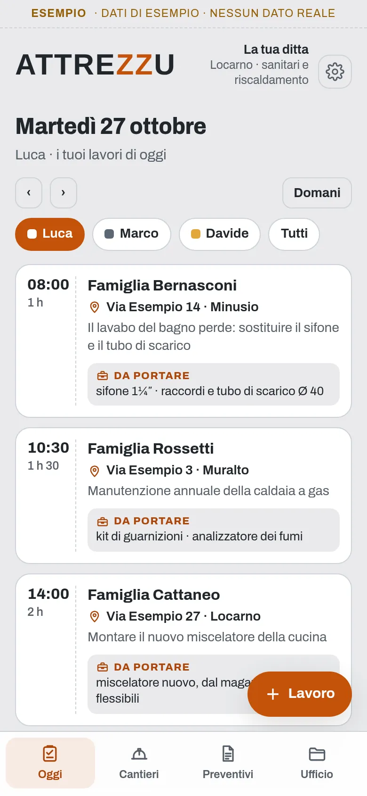
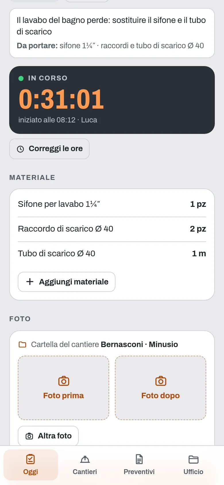
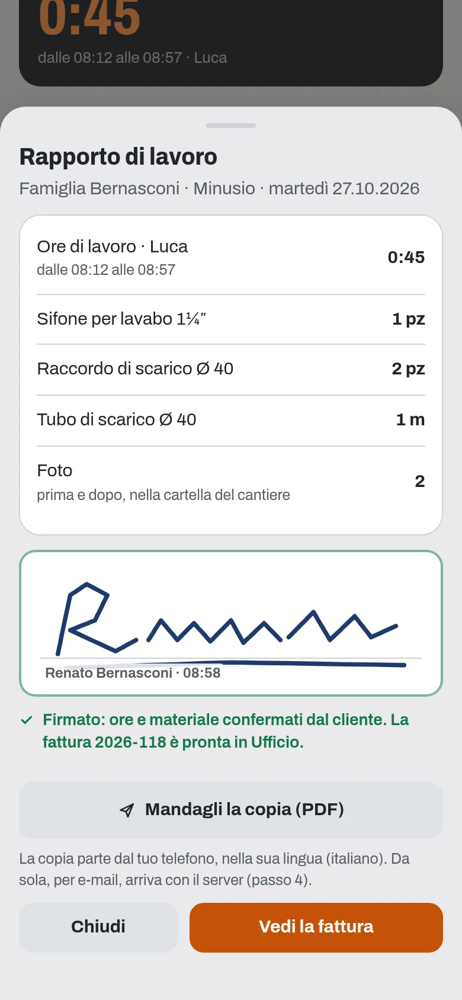
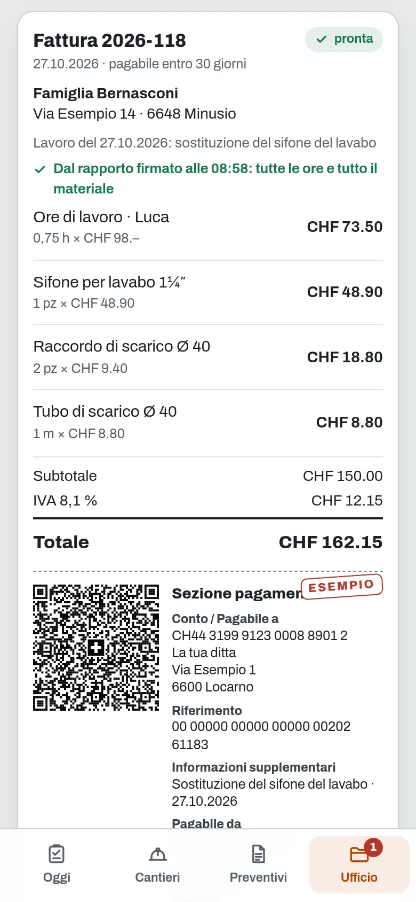
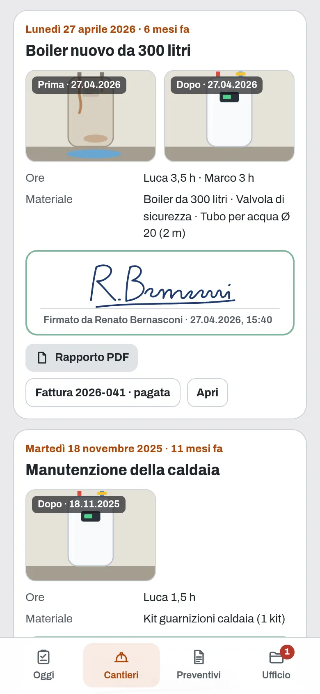

Per artigiani e imprese edili
Il gestionale per la tua ditta
I lavori di ognuno, con dove andare e cosa portare, le ore che si contano da sole, il materiale e le foto, la firma del cliente sul telefono e la fattura QR già pronta, con i preventivi dal tuo listino e le ore del mese. Da USD 3.99 al mese.
Si usa dal browser e si installa con un'icona, senza App Store.

Guardalo in azione
Meno di due minuti in cantiere, dai lavori del mattino alle ore di fine mese.
Demo con dati inventati. Nel video si vedono anche cose che arriveranno presto: ognuno con i suoi lavori e le urgenze sul suo telefono, il preventivo accettato dal cliente con un tocco e la copia del rapporto che parte da sola per e-mail.
Che cosa fa
Tutto quello che oggi sta sui foglietti nel furgone, nei messaggi e nella memoria di chi lavora in cantiere, in un posto solo.
I lavori di oggi
Ogni mattina vedi i lavori di ognuno: dove, per chi, che cosa fare e cosa portare, con le urgenze in cima. A chi lavora con te li mandi su WhatsApp, con l'indirizzo e la mappa.
Presto: ognuno con i suoi lavori sul suo telefonoLe ore si contano da sole
Dal cliente avvii il lavoro con un tocco e il cronometro conta le ore. Il materiale lo segni dal telefono, dal tuo catalogo: un sifone, due raccordi, un metro di tubo.
Le foto e la firma
Una foto prima e una dopo, nella cartella del cantiere, con la data. A lavoro finito il cliente firma il rapporto con il dito, sul telefono: ore e materiale confermati, e la copia in PDF nella sua lingua.
Presto: la copia che parte da sola per e-mailLa fattura è già pronta
Quando il cliente firma, la fattura con la sezione di pagamento QR svizzera è già fatta, con tutte le ore e tutto il materiale: basta scrivere nelle Impostazioni il nome, l'indirizzo e l'IBAN della ditta. La mandi in PDF e segni quando è pagata.
Urgenze e preventivi
Un'urgenza? Vedi chi è libero adesso e gliela passi su WhatsApp, con l'indirizzo, le parole del cliente e la mappa. I preventivi li prepari dal tuo listino, in PDF con le condizioni di sempre e nella lingua del cliente.
Presto: il preventivo accettato con un toccoCantieri e fine mese
Ogni cantiere tiene foto, ore, materiale e firme di ogni lavoro, anche di mesi fa. A fine mese hai le ore dei lavori di ognuno, cantiere per cantiere, da mandare al fiduciario per gli stipendi.




Schermate con dati di esempio.
Si installa senza App Store
Attrezzu è un'app web: si apre dal browser e resta sul telefono con la sua icona, come le altre.
Apri attrezzu.web.app con Safari, tocca Condividi e poi «Aggiungi alla schermata Home».
Apri attrezzu.web.app con Chrome, tocca il menu ⋮ e poi «Installa app».
Con Chrome o Edge si installa dall'icona nella barra degli indirizzi. Funziona anche solo nel browser.
Prezzo
Un prezzo, tutta l'app
USD 3.99
al mese
USD 14.99
ogni 6 mesi
USD 24.99
all'anno
USD 74.99
una volta sola
Prezzi in dollari USA. Per ora Attrezzu si acquista scrivendo a info@utoapps.ch: ti mandiamo il codice appena ricevuto il pagamento. Presto, con il pagamento online, i piani che si rinnovano avranno un mese di prova gratis, la prima volta che ti abboni (serve una carta).
Si apre con il tuo codice
Lo ricevi quando acquisti l'app. Lavori, ore, materiale, foto, rapporti firmati, fatture QR, preventivi e cantieri, senza limiti. I dati restano nel telefono.
Installala sulla schermata Home e scarica una copia ogni tanto (Impostazioni): in Safari, senza installarla, i dati si possono perdere.
Te la installiamo noi
La installiamo sul tuo telefono con i dati della tua ditta, la squadra, il catalogo del materiale, il listino, la tariffa, l'IBAN e l'IVA per la fattura QR e, se vuoi, i tuoi clienti, e ti mostriamo come si usa. Il codice a vita è compreso.
CHF 290
una volta sola
La vuoi con il tuo logo?
Attrezzu esiste in versione standard, così com'è, oppure su misura, con il tuo logo, i tuoi colori e le modifiche che ti servono. Per la versione su misura scrivi a info@utoapps.ch.